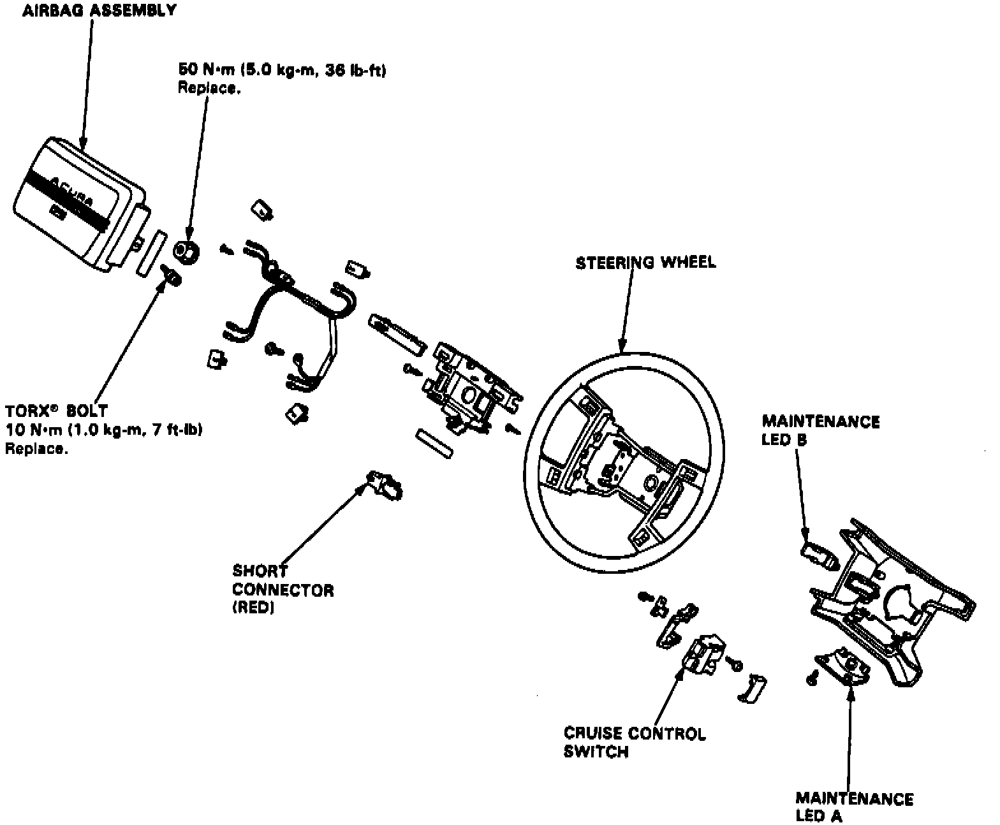

With Supplemental Restraint System
On models equipped with airbag system, refer to Technician Safety Information for system disarming and arming procedures.1. On models equipped with radio coded theft protection system, refer to Vehicle Damage Warnings for system disarming and arming procedures.
2. Remove maintenance lid from under side of steering wheel, then the short connector.
3. From underside of steering wheel, disconnect connector between air bag and cable reel.
Fig. 7 Exploded View Of Supplemental Restraint System (SRS) Steering Wheel:

4. Connect short connector (red lead) to air bag side of connector, Fig. 7.
5. Remove maintenance lid from left side of column, then the cruise control switch cover.
6. Remove T30 Torx bits from left and right sides of steering wheel, then the air bag assembly.
7. Remove steering wheel shaft nut, then rock wheel slightly from side to side and remove by pulling steadily with both hands.
8. Reverse procedure to install noting the following:
a. Torque steering wheel nut to 36 ft. lbs.
b. Ensure new T30 torx bolts are used when installing air bag assembly.
c. Ensure air bag assembly is securely attached to steering wheel; otherwise, severe personal injury could result during later air bag deployment.
9. On models equipped with radio coded theft protection system, refer to Vehicle Damage Warnings for system disarming and arming procedures.
10. On models equipped with airbag system, refer to Technician Safety Information for system disarming and arming procedures.